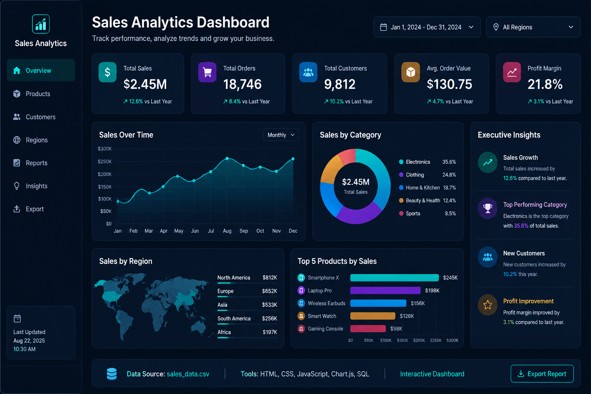

Analytics professional with experience in Python, SQL, Tableau, Machine Learning and Generative AI. Passionate about solving business problems using data.
Data Analyst | Business Intelligence | Analytics & Machine Learning
Years Experience
Analytics Projects
Certifications
Open To Work
I am an Onsite Support Engineer transitioning into Data Analytics, with experience supporting enterprise IT operations and university service workflows. My analytics toolkit includes Python, SQL, Tableau, Excel, Machine Learning and Prompt Engineering. I enjoy transforming raw data into meaningful insights through dashboards, automation and predictive analytics. Currently seeking opportunities as an Analytics & Modeling Associate, Data Analyst or Business Intelligence Analyst.
Data Analysis • Automation • Machine Learning
MySQL • Queries • Joins • Window Functions
Interactive Dashboards • KPI Reporting
Regression • Classification • NLP
Prompt Engineering • LLM Evaluation
Pivot Tables • Power Query • Dashboards
End-to-end hospital operations analytics covering patient flow, waiting time, bed utilization, appointments, revenue collection and readmission monitoring, with a responsive light/dark executive dashboard.
End-to-end analysis of 1,500 synthetic university support queries, covering service demand, SLA compliance, resolution time, backlog, first-contact resolution, reopened tickets and student satisfaction.

Interactive sales analytics dashboard for tracking revenue, profit, orders, customers, regional performance and executive KPIs.
End-to-end analysis of AI-assisted editorial throughput, content quality, rework, turnaround time, prompt performance and estimated cost savings for print and publishing operations.
End-to-end textile manufacturing analytics project covering production efficiency, quality, defects, material waste, machine downtime, delivery performance and operational KPI reporting.
Employee attrition analysis, workforce trends, department insights, employee performance metrics and HR KPI reporting.
Comprehensive e-commerce sales dashboard featuring customer segmentation, product performance, revenue trends, profit analysis and executive insights.
Interactive Netflix analytics dashboard featuring content trends, genre analysis, country-wise distribution, ratings, release insights and executive business intelligence reporting.
Designed AI prompts, evaluated LLM responses, built automation workflows and supported Generative AI use cases.
Worked on dashboards, data cleaning, EDA, business reporting, predictive analytics and KPI visualization.